SFit
SportConnect
An inclusive sports coaching platform connecting athletes with coaches through personalized and accessible experiences.
View Figma Prototype ↗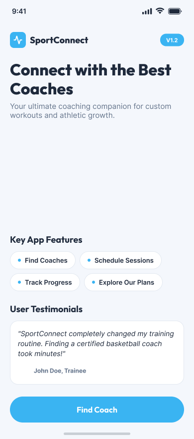
Making sports coaching
more accessible.
SFit is a mobile sports coaching platform designed to connect athletes with suitable coaches based on their interests, needs, preferences, and accessibility requirements.
The platform brings coach discovery, profiles, sessions, booking, payments, communication, and accessibility personalization into one connected experience.
Finding the right coach
shouldn't be complicated.
Athletes often need to search through different platforms and sources to find coaches, compare their experience, check availability, and arrange sessions.
Users with accessibility requirements may face additional challenges when searching for suitable sports and coaching experiences.
SFit was designed to bring these needs together in one simple and personalized experience.
One platform for
sports coaching.
SFit allows users to discover sports, find coaches, compare profiles, view qualifications and experience, communicate with coaches, and book training sessions.
The experience also includes accessibility personalization so users can communicate their individual needs before using the platform.
Sports Preferences
Users select their preferred sports and personalize their coaching experience.
Accessibility Setup
Users can specify accessibility requirements to help create a more personalized experience.
Coach Discovery
Search and discover coaches based on sports, ratings, availability, and preferences.
Coach Profiles
Explore coach information including experience, certificates, location, feedback, and posts.
Favorites
Save preferred coaches and quickly access them from the favorites section.
Booking
Select a coaching session, review booking details, and complete the booking process.
Payments
Review session pricing and select an available payment method.
Coach Chat
Communicate directly with coaches before and during the coaching experience.
Sessions & Notifications
Track upcoming sessions and receive important booking and coaching updates.
Starting with
personalization.
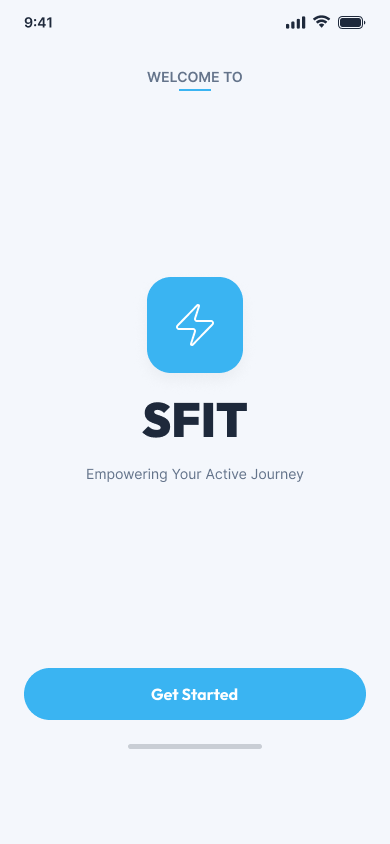
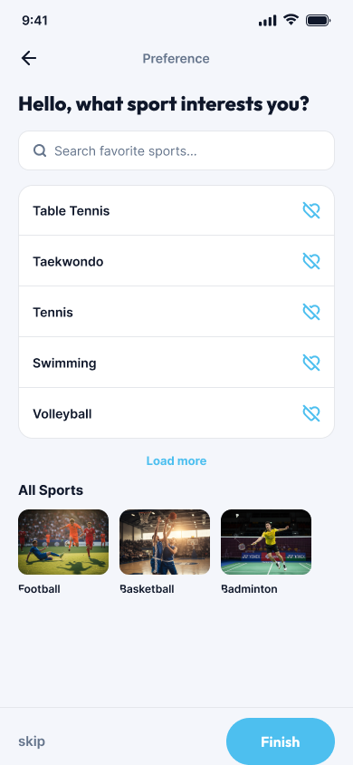
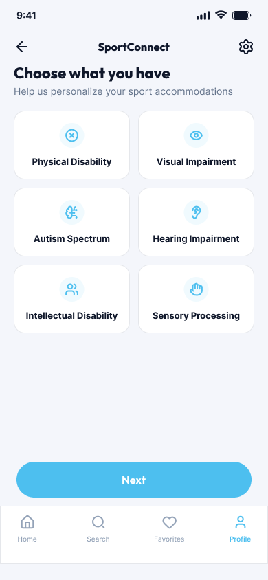
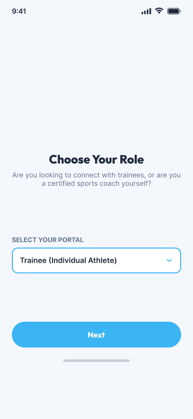
Helping users
find the right coach.
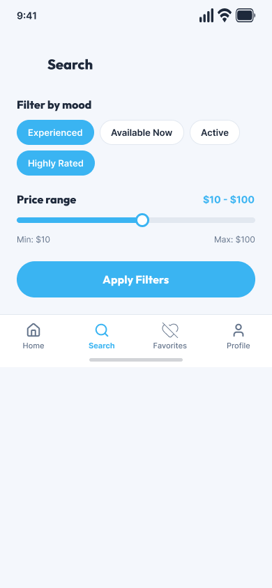
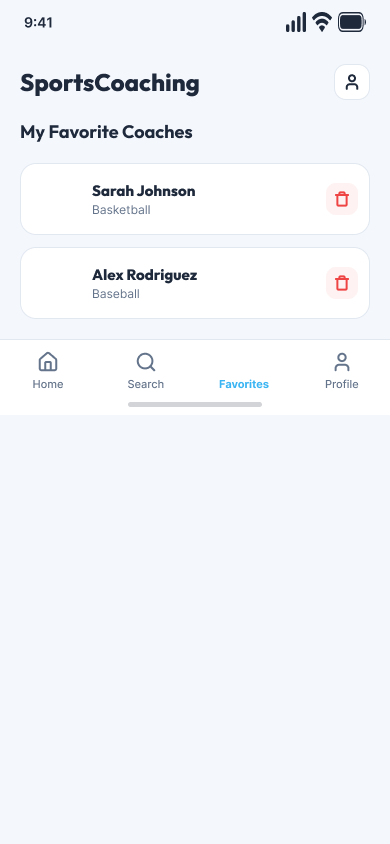
Everything users need
before booking.
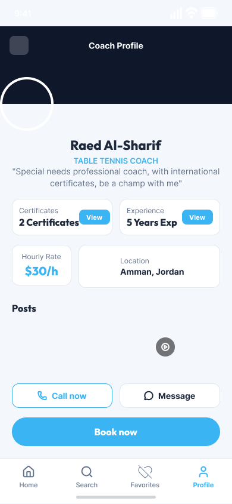
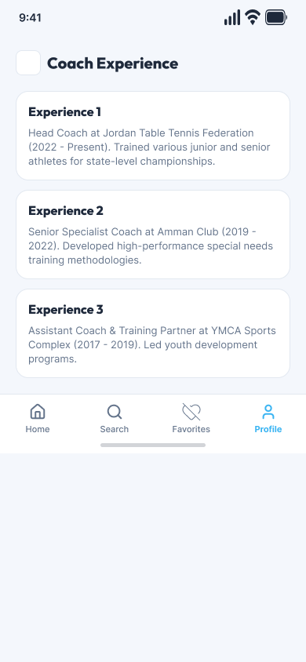
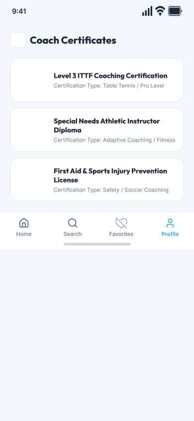
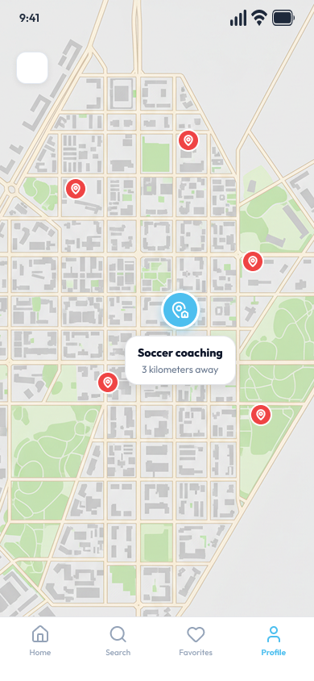
From discovery
to booking.
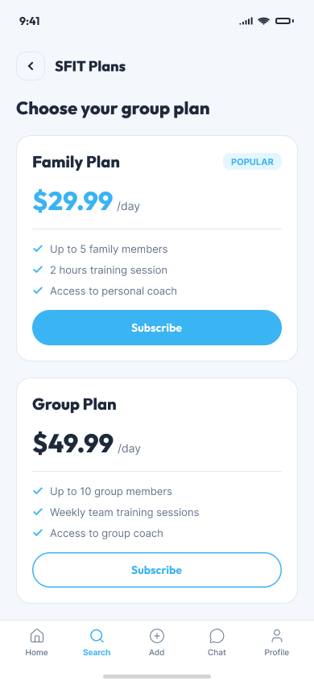
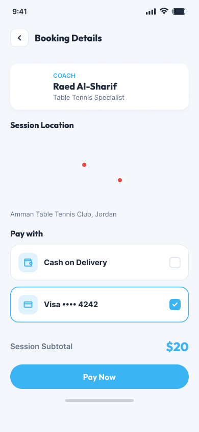
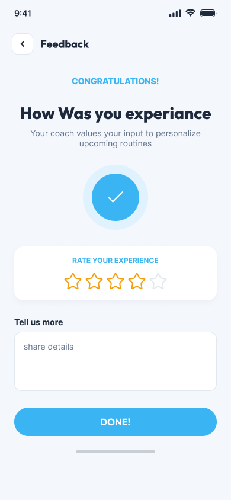
Keeping athletes
connected with coaches.
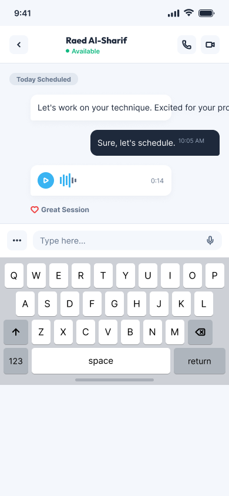
A simple space
for your account.
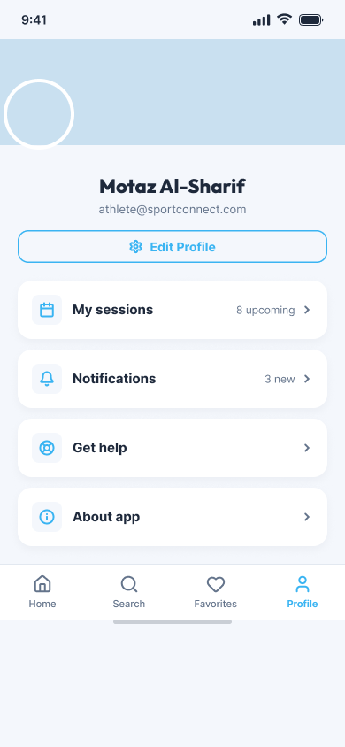
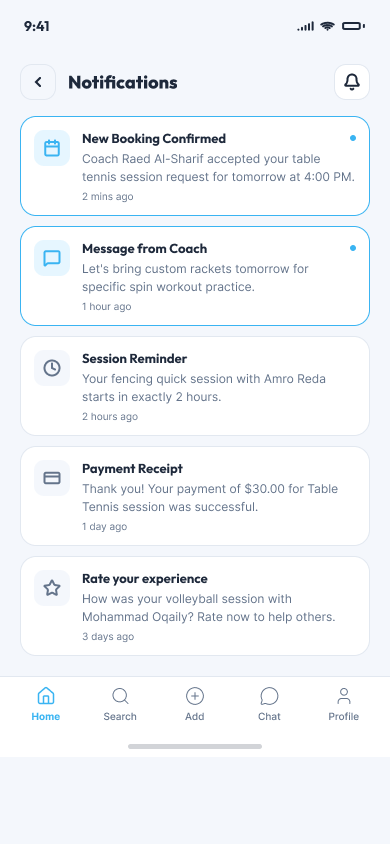
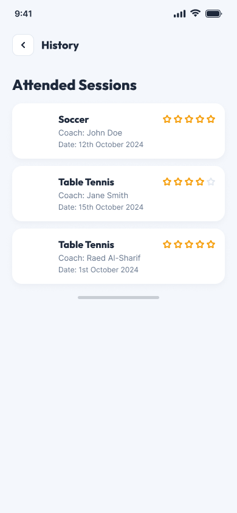
Flexible options
for different users.
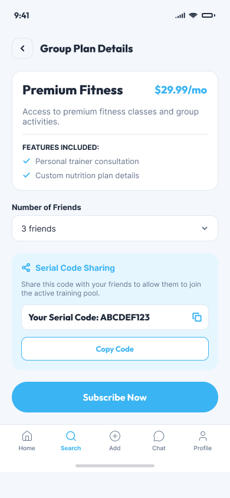
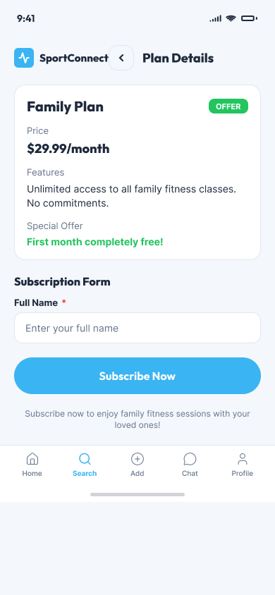
Designed with
different abilities in mind.
Accessibility is integrated into the onboarding experience instead of being treated as an afterthought.
Users can identify accessibility requirements including visual impairment, autism spectrum, hearing impairment, intellectual disability, and sensory processing needs.
This information helps personalize the experience around the individual user.
Explore sports and discover suitable coaches.
Review coach profiles, experience, certificates, ratings, and location.
Communicate with the selected coach through chat.
Select a session and complete the booking and payment process.
From user needs
to a connected experience.
Discover
Understanding the needs of athletes and coaches and identifying the main challenges around sports coaching and accessibility.
Define
Structuring the experience around sports discovery, accessibility preferences, coach discovery, communication, and booking.
Design
Creating mobile interfaces, reusable components, navigation patterns, forms, cards, profiles, and accessibility-focused experiences.
Refine
Refining layouts, interactions, navigation, visual hierarchy, and user flows to create a consistent experience.
One connected experience
for athletes and coaches.
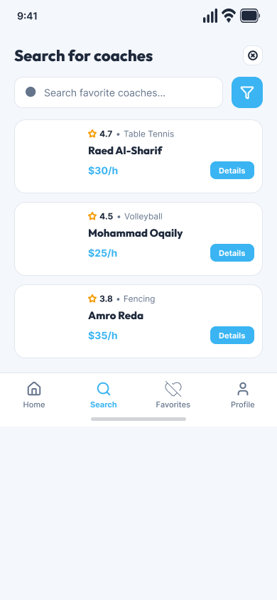
Making sports coaching more personal and accessible.
SFit brings sports discovery, coach selection, accessibility personalization, communication, booking, and payments together into one connected mobile experience.
My Role
UI/UX Designer & Developer
Tools
Figma · Flutter · Dart · Prototyping
Platform
Mobile Application